Las ilustraciones 3D de placa base y de las conexiones de corte se usan en la galería, con vista explosionada para separar la viga y dejar visible la placa, el asiento o los ángulos. Las tarjetas viga-columna añaden una columna de contexto; las viga-viga muestran el alma del apoyo. La placa doblada queda en revisión: el modelo actual no representa con claridad el apoyo en esviaje, así que la galería mantiene su isométrico SVG.
| Tipo | SVG | 3D |
|---|---|---|
| Placa base expuesta | 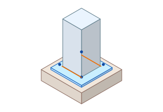 | 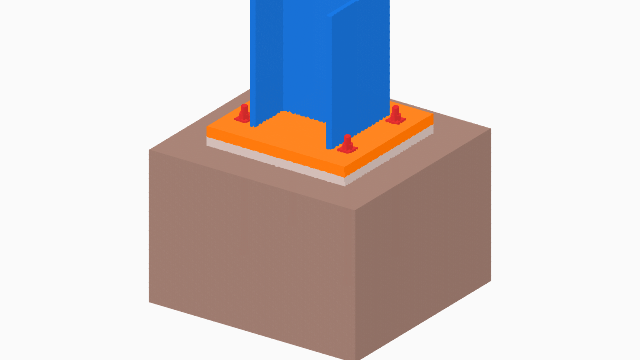 |
| Base empotrada Tipo I | 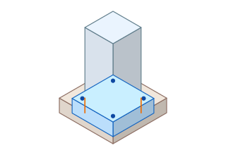 | 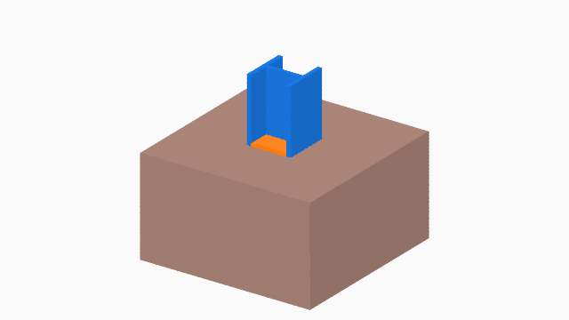 |
| Base débil | 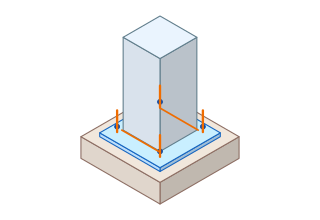 | 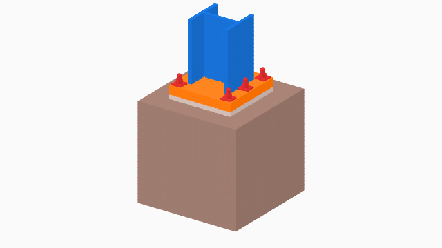 |
| Placa simple | 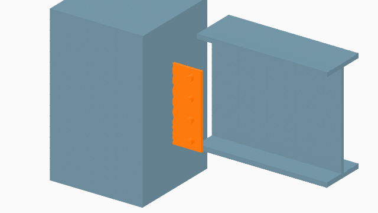 | |
| Placa extendida | 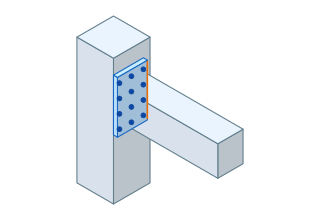 | 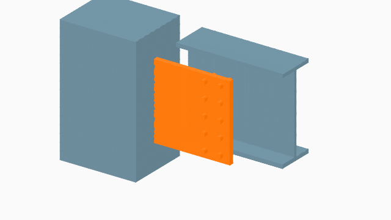 |
| Doble ángulo | 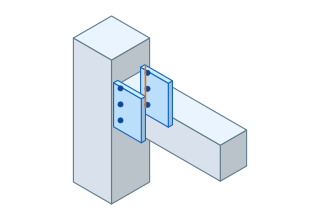 | 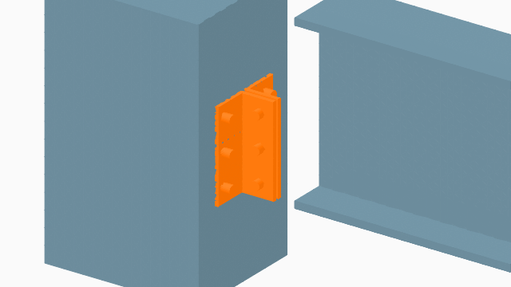 |
| Placa de extremo | 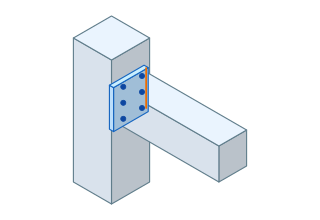 | 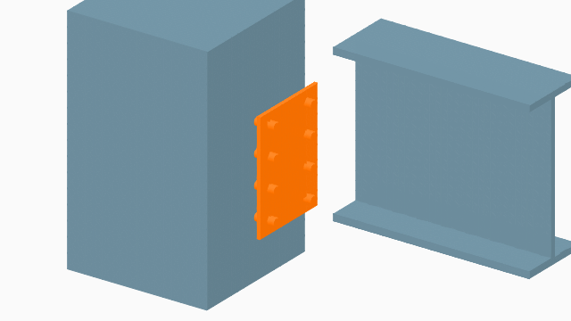 |
| Asiento | 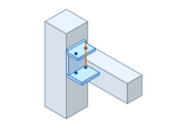 | 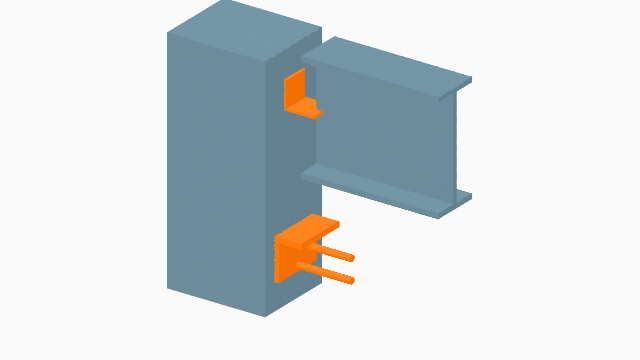 |
| Asiento rigidizado | 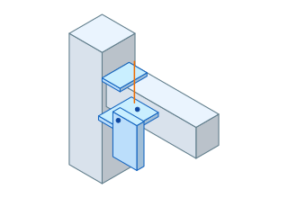 | 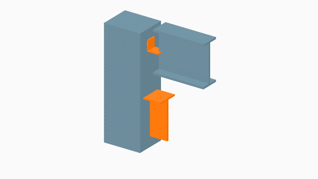 |
| Viga-viga, placa simple | Sin SVG propio | 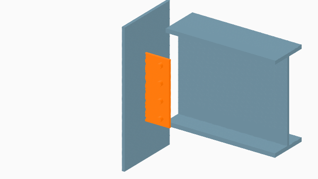 |
| Viga-viga, placa extendida | Sin SVG propio | 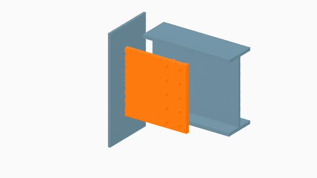 |
| Viga-viga, doble ángulo | Sin SVG propio | 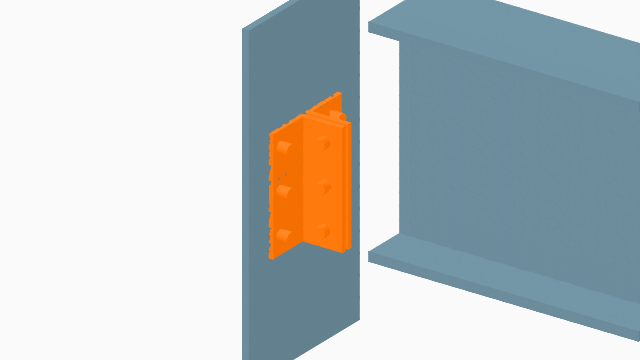 |
| Viga-viga, placa de extremo | Sin SVG propio | 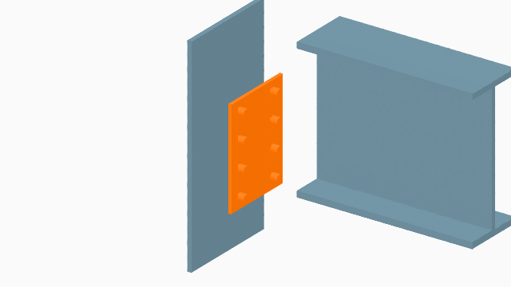 |
| Viga-viga, asiento | Sin SVG propio | 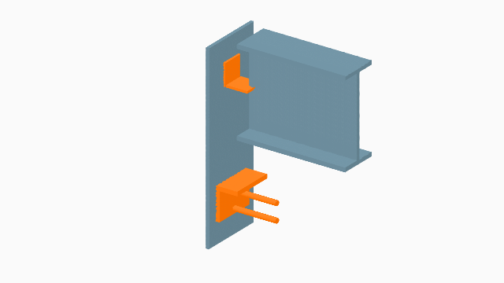 |
| Viga-viga, asiento rigidizado | Sin SVG propio | 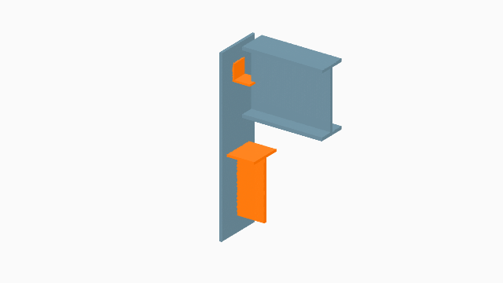 |
| Placa doblada | 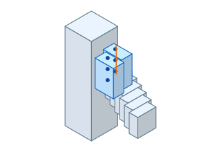 | 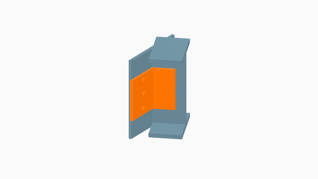 |